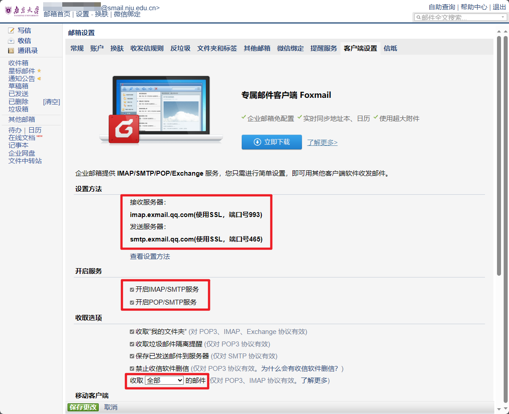

2023-08-26 杂记 & 南京大学邮箱设置
闲话
本篇内容比较短，本来要么是不打算发出来，要么就写在记事板的。但想到要是每篇博文都要求像前三篇那样长篇大论，那我写博文的热情可能很快就消磨殆尽了。为了可持续性发博，就不拘泥于字数了。我觉得值得发的就发，实在内容短才发到记事板上。
最近 Vim 配置大改，本来应该要赶紧更新上篇博文的。奈何这几天实在没时间，在进行 AutoHotkey 脚本由 v1.1 语法转向 v2 语法的重构，历时四天，终于在昨天 merge 了，并发布了 OCRC 一个大版本跃升的 beta 版本。由于刚重构，可能还有很多 bug，就先 beta 一段时间。现在还用的是 1.2.2 的 OCRC。下一篇博文大概就会谈谈我 v1.1 转 v2 遇到的一些坑及我对两个版本语法的理解。
然后是昨天去申请了 GitHub Student Develop Pack，应该算过了吧，显示 Approved，虽然我还没收到福利。
这个学生福利我在 2022 年 6 月 25 日就申请过一次了。图片资料提交的是深中校园卡，不出意料地给拒了，世一中不行啊！
然后昨天我又试了两次，拍照环节手机迟迟无法打开相机，就只能笔记本摄像头来拍了，拍了录取通知书旁边加上自己 GitHub 用户名，但是非常不稳定，清晰度也不高，交了两次都给拒了。然后突然发现我还有网课期间的外置摄像头，试了一下，清晰得多了，这次就 Approved 了。
然后是 JetBrains，这个我在邮箱下发前就申请了，按照了学长的教程，然而我当时还没有邮箱，于是失败了。现在再试了一次，也不知道要多久。用 GitHub 进行验证它说没检测到我有学生包，也许是还没下发？急急急。
好了扯了这么多，估计已经占了本篇博文内容的一半了，闲话少叙，让我们开始吧。
设置

这里是「客户端设置」界面。默认是开启 IMAP/SMTP 和 POP/SMTP 服务的。这里我使用的是 IMAP/SMTP 服务。并且选择收取「全部」邮件。
然后打开安卓 Outlook，添加邮箱。由于是隐私窗口无法截图我就口述了。
输入邮箱，比如我就是 23xxxx@smail.nju.edu.cn，然后会让你选择 IMAP 还是 POP3。我选择了 IMAP，POP3 应该也类似。
打开高级设置，IMAP 和 SMTP 主机名它默认是 imap.qq.com 和 smtp.qq.com，改成上图那样，即 imap.exmail.qq.com 与 smtp.exmail.qq.com。端口是一样的不用改。
IMAP 和 SMTP 用户名已经填好了，就是邮箱，接下来就是密码。这个密码并不是邮箱密码，而是客户端专用密码。
在「账户」界面生成一个客户端专用密码。如下图，可以取个名字什么的。只会显示一次所以复制下来，也不要泄露（这里没打马赛克因为我生成后就停用了）。
这密码到处可用，说是能提高安全性。不过我觉得蛮麻烦的，而且每次都要微信扫一下二维码才能进网页邮箱。
复制下来后粘贴到两个密码框里，连接就好了。
PC 的 Outlook 我也试了一下，继续按钮按不动不知道为啥。成功了会来说一声的。
发完博后再创了个专用密码就成功了。所以也许是只能用一次？不过我在第一次按钮失效后服务器就忘记改了，所以原因目前还不确定。
这样就能在 Outlook 收发邮件了。这下我的 Outlook 就整合了 Outlook 邮箱，QQ 邮箱及南大教育邮箱了。除了 Gmail，毕竟要梯子才能弄，因此安卓还没搞 Gmail，也许以后会搞。
吐槽
推文
配置过程中发现最新的南哪助手关于邮箱的推文「迎新特辑13丨南大邮箱的正确使用姿势（本研通用）」里给了篇客户端配置方法，然而这是八年前的文章了。
文章中使用的 IMAP 和 SMTP 服务器分别是 imap.smail.nju.edu.cn 和 smtp.smail.nju.edu.cn。然而我测试了一下提示「你的邮件服务器证书无效。仍要登录吗？」
早年的文章信息过期是很正常的事，但是呢这么新的推文却放着八年前，未经验证，失效的方案，还是很容易误导人的。因此这么简单一个配置我才再写篇博文。
信任
前面一张图片有个「信任计算机」选项，但我没找到按钮。每次都要微信验证还是很烦的。不过现在我用 Outlook 了，就不用上网页了，拜拜了您嘞。